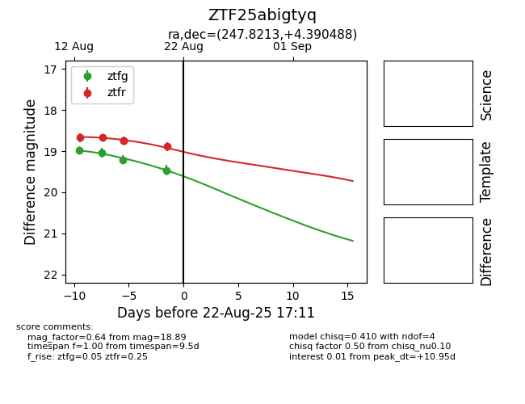

Target ZTF25abigtyq at 2025-08-22 17:21, see:
FINK: fink-portal.org/ZTF25abigtyq
Lasair: lasair-ztf.lsst.ac.uk/objects/ZTF25abigtyq
ALeRCE: alerce.online/object/ZTF25abigtyq
alt names
ZTF25abigtyq (ztf,alerce)
coordinates:
equatorial (ra, dec) = (247.8213,+4.39049)
galactic (l, b) = (19.6380,+32.98158)
photometry
last atlaso=18.99, ztfg=19.46, ztfr=18.89
9 atlaso, 4 ztfg, 5 ztfr detections
